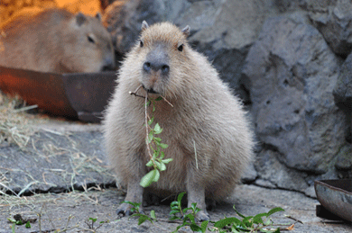

Instructions
The number of NOMS you get translates to the amount of food capy gets, so try your best to get as many NOMS as possible!
You have 1 minute to locate and click on the carrot as many times as possible while it is randomly moving around the sheet.
Each time you successfully click on a carrot, you will earn 1 point.